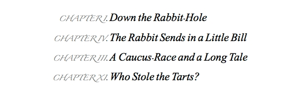

This topic concerns identifying and manipulating text in a document, with particular focus on the body text property of documents, sections, and pages.
Here is the dictionary listing from the iWork Text Suite for the basic text elements: characters, words, and paragraphs; as well as the entry for the rich text class that contains their formatting properties:
The iWork Text Suite
character n [inh. rich text ] : One of some text’s characters.
elements
contained by rich text, paragraphs, words.
paragraph n [inh. rich text ] : One of some text’s paragraphs.
elements
contained by rich text.
word n [inh. rich text ] : One of some text’s words.
elements
contained by rich text, paragraphs.
rich text n pl rich text : This provides the base rich text class for all iWork applications.
elements
contains characters, paragraphs, words
properties
color ( RGB color | text ) : The color of the font. Expressed as an RGB value consisting of a list of three color values from 0 to 65535. ex: Blue = {0, 0, 65535}. In addition, the lowercase names of the following standard colors can be used in place of RGB color value lists: "black", "blue", "brown", "cyan", "green", "magenta", "orange", "purple", "red", "yellow", "gray", and "white".
font ( text ) : The name of the font. Can be the PostScript name, such as: “TimesNewRomanPS-ItalicMT”, or display name: “Times New Roman Italic”. TIP: Use the Font Book application get the information about a typeface.
size ( integer ) : The size of the font (in points).
These object and properties will be incorporated into the discussion and examples about how to locate, extract, and manipulate text.
DO THIS ►For use with this tutorial DOWNLOAD the example Alice in Wonderland Pages document.
The first requirement for accessing and/or editing text is to identify to the script, the text you want it to examine. This is done through the use of references. You can identify (reference) text using either of three methods:
- By position value
- By property value
- By contents
Identifying by Position
Position referencing is a fairly straight-forward concept:
the first character
the first word
the first paragraph
the last character of the first paragraph
the first character of the second word of the third paragraph
You can reference by a contiguous range of elements as well:
characters 1 thru 5 of the first paragraph
words three thru -1 of the second paragraph -- -1 is the last item
paragraphs 3 thru 7 of section 2
Identifying by Property
Referencing by property value requires a bit more detail in that the script must contain the target property name and the target property value:
every word of every paragraph where its font is "Impact"
every paragraph where its size is 11
Identifying by Contents
For content matching, the script indicates the class of the object it wants to locate and the target text of the class:
first word of every paragraph where it is "Alice"
IMPORTANT: Avoid searching the document body text directly, such as: every word of body text where it is "Alice". Doing so can hang the application. Instead, search all paragraphs of the body text: every word of every paragraph of the body text where it is "Alice"
This examination of working with text begins with getting the contents of text objects. Simply precede a text object reference with the get verb (command) and the result of the script statement will be the text string contents of the text object:
IMPORTANT: In the AppleScript language, use of the get command to retrieve an object’s value is optional, as its use is implied by default. So in the iWork applications, use of a text object reference without a preceding verb returns the text objects contents.
The implicit use of the get verb (command) also occurs when a script statement uses the set verb to set the value of variables to the result of a text object reference:
To store a text object reference in a variable instead of the contents of the text object, use the AppleScript construct: a reference to
To change the values of the properties of a text object, such as its typeface, type size, or color, use a tell statement or tell block targeting the text object. The tell statement or blocks include the use of the set verb to trigger the change of the value of properties.
Tell statements are useful for changing the value of a single property, tell blocks are used to change the values of multiple properties:
NOTE: In the Pages dictionary, the term “color” is both a class and a property. To avoid ambiguity and possible errors in scripts using this term, explicitly indicate color’s use as a property by including possessive terms such as its color or color of it to indicate that color is being used as a property of the targeted text object (it).
The use of possessive indicators is optional for the other text object properties.
Here are two short script examples of changing the value of text object properties:
The following script uses the provided example Pages file to demonstrate how to format the section titles with multiple text styles:
(⬇ see below ) Some of the section titles formatted by the script:

To change the content of a text object, use the set verb followed by a delineated reference to the text object, followed by the new text for the text object:
set (the first character of the body text) to "K"
Note that the text object reference is placed within parens ( ) to ensure that the object reference is resolved first by the script, before it attempts to change the text object’s contents.
Scripts can replace the content of all of the Pages text objects: characters, words, paragraphs, and even the document’s body text:
Read the next page for details on how to perform find and replace on document with long body text.